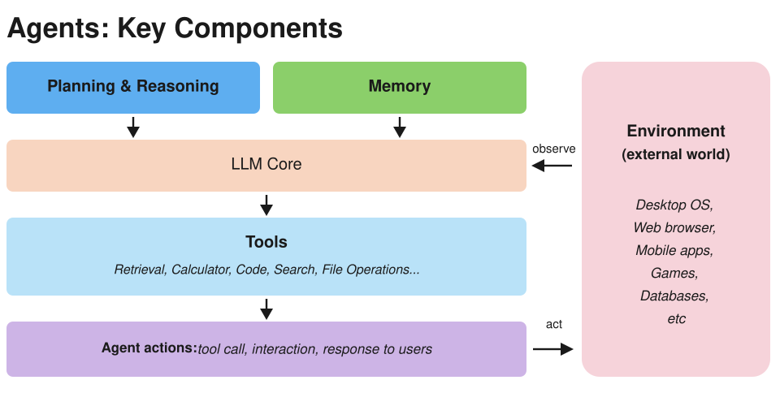

CS329Z: What Are Agentic Systems
The course teach about how to buiding reliable softwares based on the LLM. This is the first lecture of the Standford CS329Z course. This lecture covers three import parts: agent architecture, compound AI Systems, and key challenges.
# Agent Architecture

# Compound AI Systems
Key Challenges
— Mike Chen
← Back to all posts